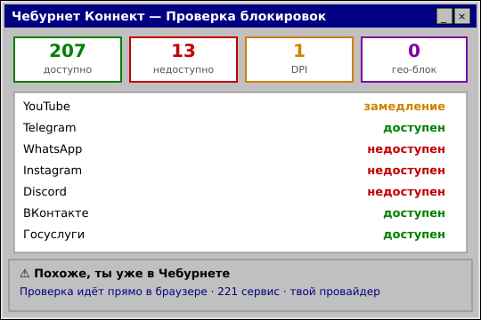

Штраф за VPN в 2026: правда или миф★彡 Закон · 21 июня 2026 彡★

Вокруг штрафов за VPN много слухов и паники. Разбираемся спокойно и по делу: что реально предусмотрено законом в 2026 году. 
Что законноИспользование VPN и прокси для личных целей в России законно. Само подключение к прокси или VPN ради доступа к привычным сервисам пользователя не наказывается.  Что под ограничениямиОграничения касаются рекламы средств обхода блокировок и умышленного поиска/доступа к материалам из списка запрещённых. Это не про обычное использование VPN для YouTube или мессенджеров. То есть пользоваться VPN можно, а вот рекламировать способы обхода — нет. Проверить, что заблокировано именно у вас, можно бесплатным тестом Чебурнет Коннект. 

Прокси вернёт Telegram бесплатно, а VPN на VLESS Reality — весь интернет и обходит DPI/ТСПУ. Промокод VNESPISKA = −20% ★ проверь блокировки — тест 
Другие новости
|